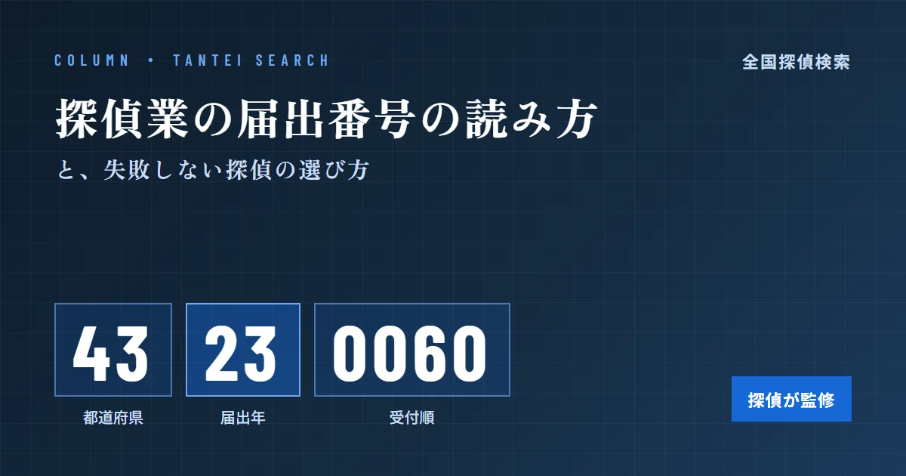
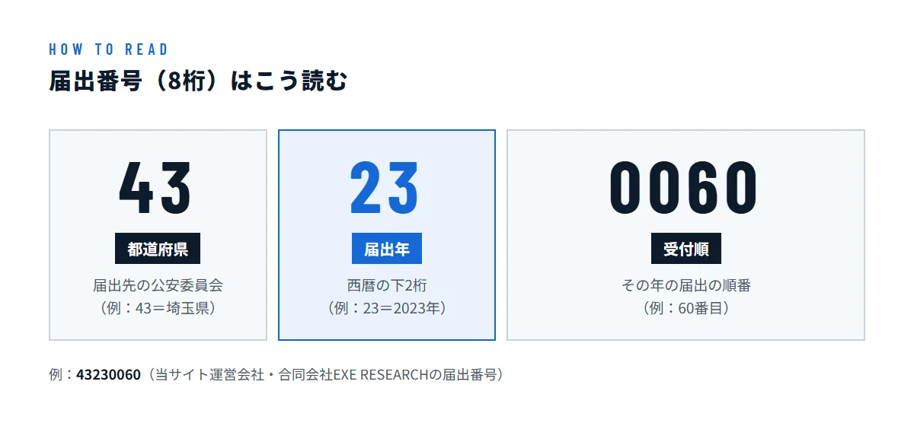
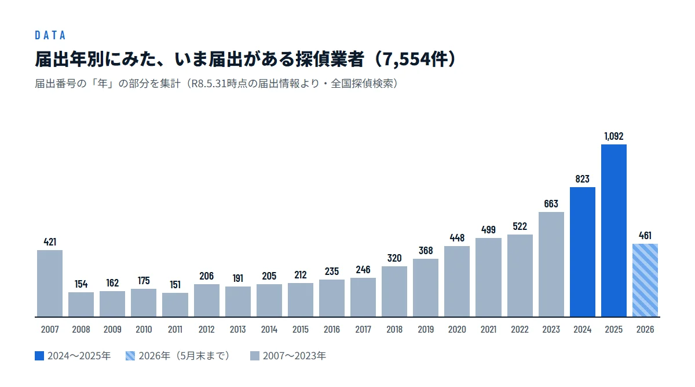
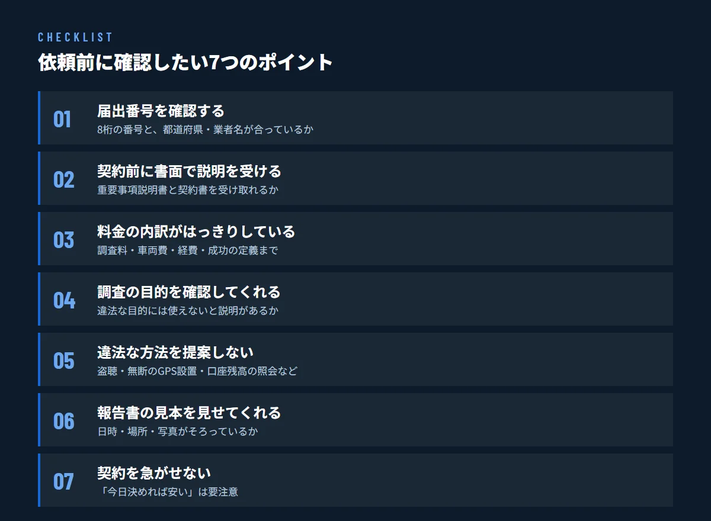

探偵業の届出番号とは？8桁の読み方と、失敗しない探偵の選び方

この記事は探偵が監修しています
監修：佐藤 良太（ラクーン探偵社 代表（合同会社EXE RESEARCH））
探偵事務所を探していると、ホームページの片隅に「探偵業届出番号 第〇〇〇〇〇〇〇〇号」という8桁の番号を見かけることがあります。この番号は、その事務所が法律に沿って公安委員会へ届出をしていることを示すものです。この記事では、届出番号の読み方と確かめ方、そして番号だけでは分からない「依頼してよい探偵かどうか」の見分け方を、全国7,554件の届出データとあわせて解説します。
探偵業は「届出」をしないと営業できない
探偵の仕事は、2007年6月に施行された「探偵業の業務の適正化に関する法律」（探偵業法）によってルールが決められています。尾行や張り込み、聞き込みなどで人の行動や所在を調べ、その結果を依頼者に報告する仕事は、この法律でいう「探偵業務」にあたります。
探偵業を始める人は、営業を始める日の前日までに、営業所がある都道府県の公安委員会へ届出をしなければなりません。窓口は営業所の所在地を管轄する警察署です。届出が受理されると「届出証明書」が交付され、そこに記載されるのが届出番号です。探偵業者は、この届出証明書を営業所の見やすい場所に掲示する決まりになっています。
届出をしないまま探偵業を営むことは法律違反で、罰則の対象です。つまり、届出番号を示せない事務所は、それだけで依頼先の候補から外してよいと言えます。
ここがポイント
探偵業の届出は「許可」や「認可」ではありません。公安委員会が調査の腕前や料金の妥当さを審査したうえで与えるお墨付きではなく、法律で決められた条件を満たしていれば受理されます。届出番号は「最低限の入口」であり、それだけで信頼できる事務所だとは言い切れない点を覚えておきましょう。
届出番号（8桁）の読み方
届出番号は8桁の数字です。当サイトに掲載している全国7,554件の番号を集計したところ、すべてが8桁で、次のような決まった並びになっていました。

- 最初の2桁：届出先の都道府県（例：43＝埼玉県）
- 次の2桁：届出をした年（西暦の下2桁。例：23＝2023年）
- 最後の4桁：その年の受付順（例：0060＝60番目）
最初の2桁は、おなじみの都道府県コード（埼玉県＝11など）とは別の番号です。当サイトのデータから、都道府県ごとの頭2桁を一覧にしました。北海道だけは地域ごとに10〜14の5つに分かれています。
- 北海道・東北
- 北海道 10〜14／青森 20／岩手 21／宮城 22／秋田 23／山形 24／福島 25
- 関東・甲信越
- 東京 30／茨城 40／栃木 41／群馬 42／埼玉 43／千葉 44／神奈川 45／新潟 46／山梨 47／長野 48
- 東海・北陸
- 静岡 49／富山 50／石川 51／福井 52／岐阜 53／愛知 54／三重 55
- 近畿
- 滋賀 60／京都 61／大阪 62／兵庫 63／奈良 64／和歌山 65
- 中国・四国
- 鳥取 70／島根 71／岡山 72／広島 73／山口 74／徳島 80／香川 81／愛媛 82／高知 83
- 九州・沖縄
- 福岡 90／佐賀 91／長崎 92／熊本 93／大分 94／宮崎 95／鹿児島 96／沖縄 97
たとえば「43230060」なら、埼玉県公安委員会に2023年に届出があった、その年の60番目の業者という意味になります（この番号は当サイトを運営する合同会社EXE RESEARCHのものです）。番号を見れば、どこに届出をしたか、いつから探偵業を営んでいるかの目安が分かります。
データで見る、いま届出がある探偵業者
届出番号に「年」が入っていることを利用して、当サイトに掲載している7,554件（R8.5.31時点の届出情報）を届出年ごとに数えると、次のようになります。

目立つのは、ここ数年に届出をした業者の多さです。2025年の届出は1,092件と最も多く、2024年（823件）と2026年5月末まで（461件）を合わせると2,376件になります。いま届出がある業者のおよそ3割が、この2年半ほどの間に届出をした計算です。一方で、法律の施行と同時の2007年に届出をし、いまも営業を続けている業者が421件あります。
このグラフは、すでに廃業した業者を含まない「いま届出がある業者」の数です。古い年ほど件数が少なく見えるのは、その間に廃業した業者がいるためでもあります。それでも、新しい探偵事務所が急増していることははっきり読み取れます。
都道府県別に見ると、届出が多いのは東京都（1,232件）、大阪府（741件）、北海道（547件）、神奈川県（539件）、埼玉県（316件）の順です。地域によって選べる事務所の数は大きく異なります。届出が少ない県では、近くの都県の事務所が出張して調査を引き受けることもよくあります。地元の事務所にこだわりすぎず、対応エリアに自分の地域が含まれているかを確かめて候補を広げると、比べられる選択肢が増えます。
選び方へのヒント
届出年は、その事務所が探偵業を続けてきた年数の目安になります。ただし、新しい事務所でも経験豊富な調査員が独立して開業したケースは珍しくありません。年数だけで判断せず、次に紹介するチェックポイントとあわせて確かめることが大切です。
届出番号を確かめる方法
届出番号は、次の方法で確かめられます。
- ホームページや広告を見る：多くの事務所は、会社概要やページの下部に届出番号を載せています。
- 事務所で届出証明書を見せてもらう：届出証明書は営業所に掲示する決まりなので、面談のときに確認できます。
- 電話で直接聞く：きちんと届出をしている事務所なら、すぐに答えられるはずです。
- 当サイトで照らし合わせる：全国探偵検索では、業者名や都道府県から届出業者を探せます。事務所の名前と所在地が、届出の内容と合っているかを確かめましょう。
確認のときは、番号の頭2桁と事務所の所在地が合っているかも見てください。東京都の事務所なのに頭2桁が「30」でない場合は、届出をした後に移転していないかなど、理由を尋ねてみると安心です。答えをはぐらかしたり、番号を教えてくれなかったりする事務所は避けたほうがよいでしょう。
なお、当サイトでは業者様のプライバシーに配慮し、掲載の許可をいただくまで届出番号を非公開にしています。掲載許可をいただいた業者のページでは、届出番号や代表者名などをご覧いただけます。
失敗しない探偵の選び方 7つのチェックポイント
届出番号は入口にすぎません。実際に依頼する前に、次の7つを確かめておくと、料金トラブルや期待はずれの調査を防ぎやすくなります。

1. 届出番号を確認する
前の章で紹介したとおり、8桁の番号と、都道府県・業者名が合っているかを確かめます。最初に確認しておけば、無届の業者に依頼してしまう心配がなくなります。
2. 契約前に書面で説明を受ける
探偵業法では、契約を結ぶ前に、料金や調査の内容、契約の解除などの重要事項を書面で説明することが義務づけられています。契約を結んだときにも、内容を記した書面を渡さなければなりません。口頭の説明だけで契約を進めようとする事務所は要注意です。
3. 料金の内訳がはっきりしている
探偵の料金は、時間で決まる「時間料金」、まとまった時間をセットにした「パック料金」、結果が出たときだけ支払う「成功報酬」など、事務所によって大きく異なります。調査料のほかに、車両費や交通費などの経費がどこまで含まれるかも確認しましょう。成功報酬の場合は、「何が分かれば成功なのか」を契約前に書面で取り決めることが特に大切です。
4. 調査の目的を確認してくれる
探偵業者は、依頼者から「調査結果を犯罪や違法な差別に使わない」ことを示す書面を受け取らなければなりません。そのため、まともな事務所ほど調査の目的をきちんと尋ねます。目的を聞かれたときに不快に思う必要はありません。むしろ、何も聞かずに引き受ける事務所のほうが心配です。
5. 違法な方法を提案しない
探偵だからといって、特別な調査の権限があるわけではありません。盗聴器の設置や、他人の車に無断でGPS発信機を取り付けること、金融機関に問い合わせて口座の残高を聞き出すことなどは、探偵であっても許されません。「何でも調べられます」と違法な方法をほのめかす事務所に依頼すると、依頼者自身がトラブルに巻き込まれるおそれがあります。
6. 報告書の見本を見せてくれる
調査の成果は、最終的に報告書としてまとめられます。日時・場所・写真がそろった報告書は、裁判や話し合いの資料としても役立ちます。相談の段階で、個人情報を伏せた報告書の見本を見せてもらえるか聞いてみましょう。
7. 契約を急がせない
「今日契約すれば安くなります」「すぐに決めないと証拠が消えます」などと契約を急がせる事務所には注意が必要です。複数の事務所に相談し、説明や見積もりを比べてから決めても遅くはありません。なお、事務所以外の場所（自宅や喫茶店など）で契約した場合は、クーリング・オフの対象になることがあります。
相談の前に準備しておきたいこと
信頼できそうな事務所が見つかったら、相談の前に次のことを整理しておくと、見積もりの精度が上がり、事務所どうしを比べやすくなります。
- 調べたいことと、その目的：「何が分かれば満足か」を一文で言えるようにしておきます。
- 対象者の情報：氏名、写真、住所や勤務先、よく使う車や交通手段など、分かる範囲で構いません。
- 動きがありそうな日時：帰りが遅くなる曜日や出張の予定など、心当たりがあれば伝えます。
- 予算の上限：先に伝えておくと、予算内で効果の高い調査日を提案してもらいやすくなります。
同じ内容を複数の事務所に伝えれば、提案や見積もりを公平に比べられます。説明が分かりやすく、こちらの質問にきちんと答えてくれるかどうかも、大切な判断材料です。
よくある質問
届出番号があれば、信頼できる探偵事務所だと考えてよいですか？
届出番号は、法律で決められた届出をしていることを示すものですが、調査の質や料金の妥当さを保証するものではありません。届出番号の確認に加えて、書面での説明や料金の内訳など、この記事で紹介したポイントもあわせて確かめてください。
届出番号から、事務所の開業時期は分かりますか？
番号の3〜4桁目が届出をした年（西暦の下2桁）なので、その都道府県で探偵業の届出をした時期の目安になります。ただし、法人化や移転などで届出をし直している場合もあるため、正確な開業時期は事務所に確認してください。
当サイトで届出番号が表示されていないのはなぜですか？
当サイトでは、業者様から掲載の許可をいただくまで、届出番号・代表者名・住所の番地以降を非公開にしています。番号を確かめたい場合は、事務所のホームページを見るか、事務所に直接お問い合わせください。
探偵と警察・弁護士には、どう相談先を分ければよいですか？
つきまといや脅迫など、身の危険がある場合は、まず警察に相談してください。慰謝料の請求や離婚の手続きなど法律の判断が必要な場面では弁護士が相談先になります。探偵は、その前段階として事実を確かめ、証拠を報告書にまとめる役割を担います。目的に合わせて使い分け、必要に応じて連携してもらうのがおすすめです。
まとめ
探偵業の届出番号は、最初の2桁が都道府県、次の2桁が届出年、最後の4桁が受付順を表す8桁の番号です。届出番号を示せない事務所は依頼先から外し、そのうえで、書面での説明、料金の内訳、調査目的の確認、違法な方法を提案しないかなどを一つずつ確かめていきましょう。
いま届出がある探偵業者は全国で7,554件あり、ここ数年で新しい事務所が大きく増えています。選択肢が増えた今だからこそ、届出番号と7つのチェックポイントを手がかりに、安心して任せられる探偵を選んでください。
全国7,554件の届出業者から、業者名や地域で探偵事務所を探せます。
全国探偵検索で探す →